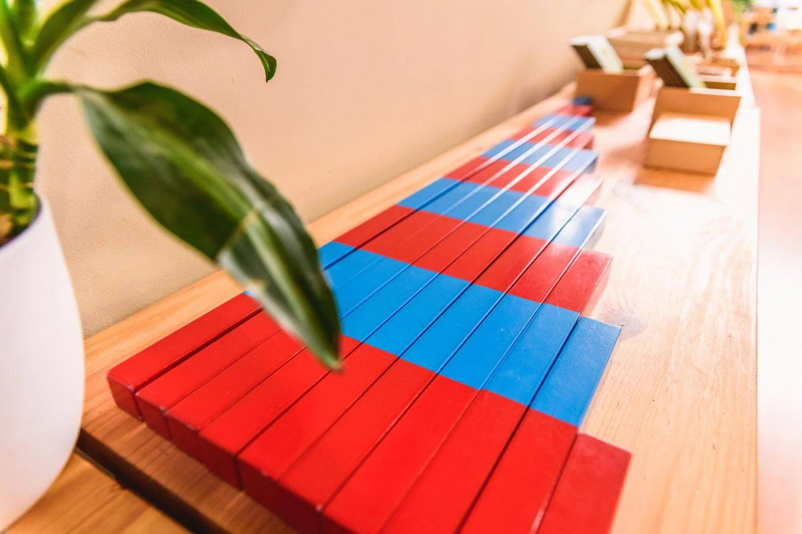
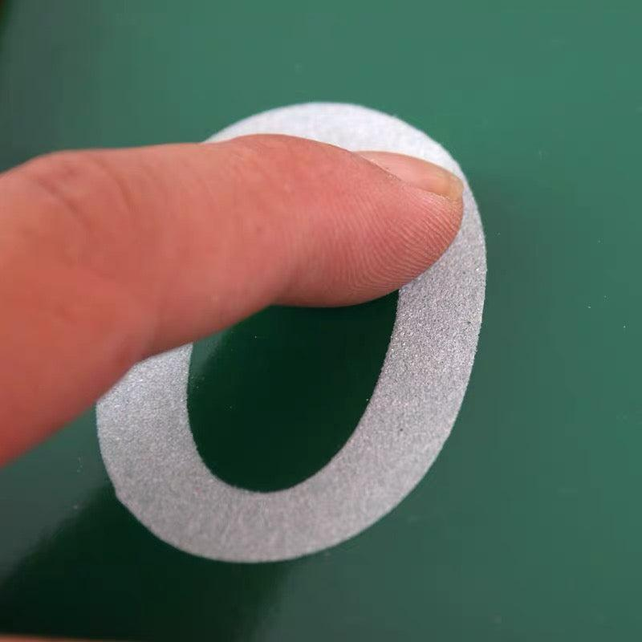
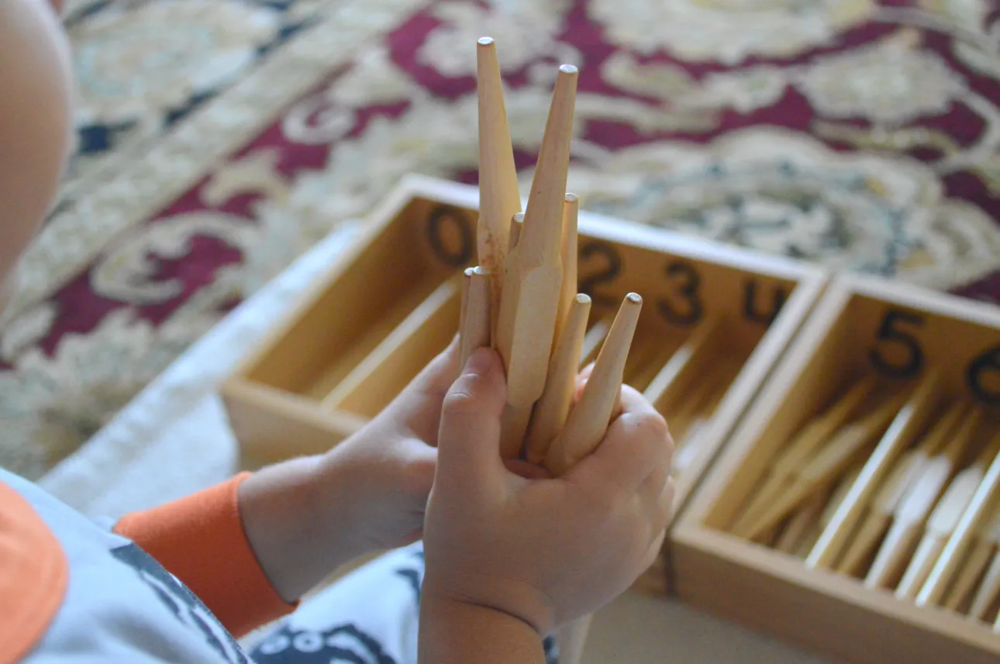
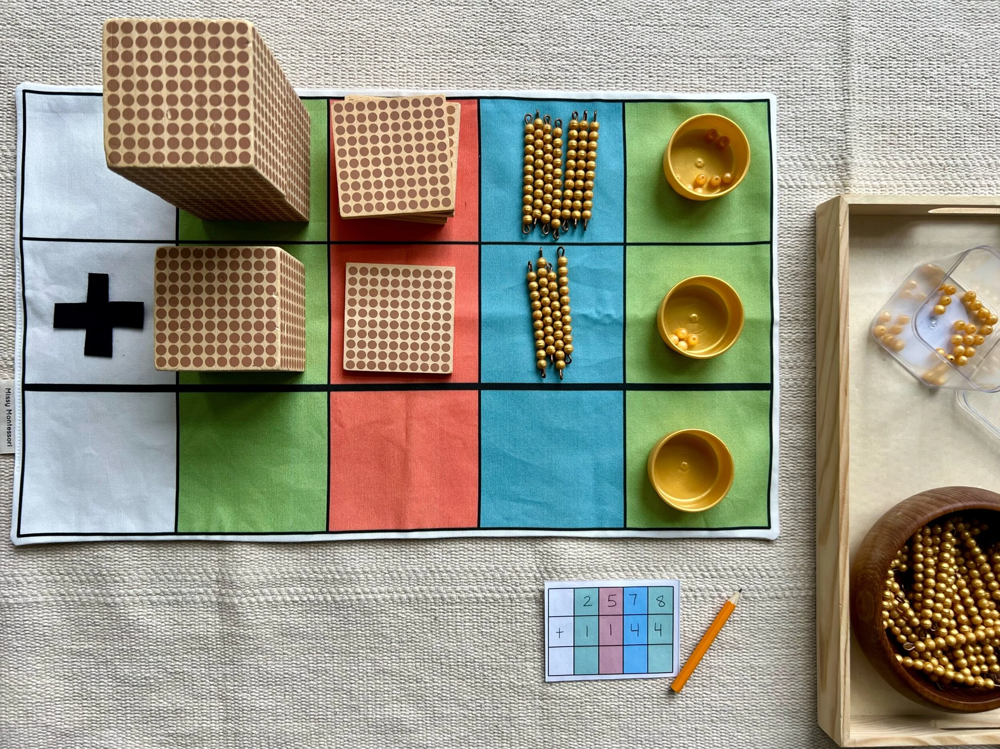

Number Rods
Children build quantity from one to ten by arranging rods of different lengths, connecting physical size with numerical value.
Montessori Curriculum
Montessori Mathematics helps children discover numbers through hands-on exploration. Carefully designed concrete materials help children understand quantity, counting, place value, and mathematical relationships before moving confidently to abstract thinking.
Montessori Mathematics
Montessori Mathematics helps children understand numbers through hands-on, concrete experiences before moving toward abstract symbols and calculations.
In a Montessori classroom, children do not simply memorize numbers. They see, touch, compare, count, build, and manipulate materials that make mathematical ideas clear and meaningful.
This approach helps children connect quantity, symbols, sequence, place value, and operations in a natural progression. Each material introduces one concept carefully so children can build confidence step by step.
At Together We Grow Montessori School, Mathematics is introduced through beautiful Montessori materials that help children develop number sense, concentration, problem-solving, and a joyful relationship with learning.
Concrete to Abstract
Montessori Mathematics begins with concrete materials that children can hold, move, count, and compare. This allows young children to experience mathematical ideas with their hands before working only with written symbols.
Children first explore quantity, then connect quantity to numerals, and gradually move toward counting, place value, and early operations. Each step builds on the previous one in a clear and meaningful sequence.
Because mathematical concepts are introduced through hands-on discovery, children often develop confidence, concentration, logical thinking, and a deeper understanding of how numbers work.
Montessori Mathematics Materials
Montessori Mathematics materials are carefully designed to help children move from concrete experience to abstract understanding. Each material introduces a clear mathematical concept through hands-on exploration, repetition, and discovery.

Children build quantity from one to ten by arranging rods of different lengths, connecting physical size with numerical value.

Children trace numerals with their fingers while learning number symbols through movement and touch.

Children count individual objects while discovering one-to-one correspondence and the important concept of zero.

Golden Beads introduce the decimal system and place value through beautiful concrete materials that children can see and manipulate.
Learning Through Discovery
Montessori Mathematics encourages children to explore numbers through purposeful hands-on work. Instead of memorizing procedures first, children discover relationships by counting, comparing, arranging, grouping, and repeating activities.
Many Montessori math materials include a natural control of error, allowing children to notice when something does not fit or when a quantity does not match. This helps children develop independence, problem-solving, and confidence in their own thinking.
As children repeat mathematical activities, they strengthen concentration, logical thinking, sequencing, memory, and attention to detail. These early experiences prepare them for more advanced concepts such as addition, subtraction, multiplication, division, and place value.
Because learning begins with concrete experience, children often develop a clear and joyful understanding of mathematics rather than fear or confusion.
Preparing for the Future
Montessori Mathematics builds much more than counting skills. Children learn to compare, sequence, classify, estimate, recognize patterns, and understand relationships between numbers.
These experiences support future learning in arithmetic, geometry, science, technology, and everyday problem-solving. When children understand numbers concretely, they are better prepared to work with abstract symbols and more complex mathematical ideas later on.
Mathematics also strengthens important learning habits such as concentration, perseverance, accuracy, independence, and confidence. Children begin to see themselves as capable thinkers who can solve problems step by step.
Montessori education helps children experience mathematics as meaningful, beautiful, and connected to the real world.
At Together We Grow Montessori School
At Together We Grow Montessori School, Mathematics is introduced through hands-on Montessori materials that help children understand numbers in a concrete and meaningful way.
Children work with materials such as Number Rods, Sandpaper Numbers, Spindle Boxes, and Golden Beads to explore quantity, numerals, counting, place value, and early mathematical relationships.
Our Montessori educators carefully observe each child's readiness and present lessons individually, allowing children to progress at their own pace while building independence, concentration, and confidence.
Through Montessori Mathematics, children develop a strong foundation for future learning and a positive relationship with numbers, problem-solving, and logical thinking.
Frequently Asked Questions
Montessori teaches mathematics through hands-on concrete materials that help children understand quantity, numerals, counting, place value, and operations before moving to abstract symbols.
Common Montessori math materials include Number Rods, Sandpaper Numbers, Spindle Boxes, Golden Beads, bead stairs, number cards, and other materials that help children build mathematical understanding through touch and movement.
Concrete materials allow children to see and feel mathematical concepts. This helps them understand numbers deeply before working with abstract equations or written calculations.
Yes. Children learn both quantity and symbols through materials such as Number Rods, Sandpaper Numbers, and Spindle Boxes. They gradually connect spoken numbers, written numerals, and real quantities.
Children work with authentic Montessori math materials in a carefully prepared classroom. Lessons are introduced individually so each child can build confidence, concentration, and understanding at their own pace.
Experience how Montessori Mathematics transforms numbers into meaningful, hands-on learning that builds confidence, logical thinking, and a lifelong love of mathematics.
Book a School Tour